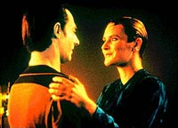
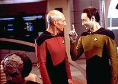

|
MANCHETE
DO EPISDIO
Apresentao de personagens redunda
em reprise de episdio da Srie Clssica
Episdio
anterior | Prximo
episdio
Sinopse:
Data Estelar: 41209.2.
 A
Enterprise enviada para investigar estranhas ocorrncias na nave
de pesquisa USS Tsiolkowsky, que estava monitorando o colapso de uma
estrela. Ao ir a bordo da nave, o grupo avanado descobre que toda
a tripulao est morta.
O que eles no sabem que Geordi LaForge est voltando para a
Enterprise levando consigo uma substncia transmissvel que afeta
os tripulantes, fazendo com que sintam-se como se estivessem
intoxicados e mentalmente instveis, em efeito similar ao da
embriaguez.
Enquanto a doutora Crusher procura um antdoto, o caos toma conta,
com Wesley dominando a engenharia e assumindo o comando da
Enterprise.
Por fim, o tenente-comandante Data e a engenheira-chefe MacDougal
conseguem restabelecer o controle da nave e salv-la de um
fragmento estelar que vinha em sua direo. Mas no sem uma ajuda
de Wesley, que conseguiu inverter a potncia do raio trator ligado
Tsiolkovsky, empurrando-a contra o fragmento, ganhando assim mais
alguns segundos para que a nave pudesse escapar.
Comentrios:
"The Naked Now" um episdio que no faz a
menor questo de esconder que uma cpia descarada de uma histria
da Srie Clssica. Como se s a premissa bsica no bastasse
para lig-lo ao roteiro original, at os trejeitos dos personagens
ao serem contaminados, olhando para as mos com olhar de estranheza
e suando muito, so reproduzidos.
Esse um roteiro feito com base emprica. Sabia-se que era
importante desenvolver e situar os personagens, suas relaes e
caractersticas bsicas. Olhando para a Srie Clssica, o
episdio que melhor conseguiu trazer tona os aspectos mais sutis
(e ao mesmo tempo, mais relevantes) de cada um dos tripulantes foi o
episdio "The
Naked Time".
Partindo do pressuposto de que em time que est ganhando no se
mexe, os produtores de A Nova Gerao decidiram fazer um
remake do episdio, para trazer os mesmos efeitos para os recm-criados
personagens. O esforo de adaptao foi mnimo - tanto que o
roteirista do episdio original, John D. F. Black, ganhou crditos
por esse episdio sem trabalhar no novo roteiro.
Apesar de no funcionar to bem como o original, e de ser uma idia
velha, o episdio at que "quebra um galho" para
explicar as relaes entre os personagens. A carncia afetiva de
Tasha Yar, o caso mal-resolvido entre o capito Picard e a doutora
Crusher, a irritante genialidade de Wesley e a paixo de Troi por
Riker so expostas de forma bastante honesta e contundente.
Worf est sobrando no episdio, refletindo uma tnica que duraria
por toda a temporada. Nem contaminado ele conseguiu ficar. Alis,
por falar em contaminao, o roteiro nem deixa claro se esta se d
por um vrus ou por uma substncia orgnica qualquer. Sabe-se
apenas que algo semelhante ao que aconteceu com a Enterprise
original, sob o comando de James T. Kirk.
O episdio serve para demonstrar a imaturidade dos produtores. Em
troca de algumas piadas de riso fcil, eles corromperam o
personagem de Data, permitindo que ele ficasse "bbado",
mesmo sendo um andride.
 Vale
lembrar que isso no passa de um dja vu. No episdio clssico,
Spock seria a vtima do mau gosto. Na forma em que foi
originalmente escrito, o episdio mostrava um Spock se esforando
para no chorar, vagando pelos corredores da Enterprise, quando um
tripulante alucinado passa por ele e pinta um bigode em seu rosto,
para a total desmoralizao do vulcano.
A cena s no foi para o episdio pelos protestos de Leonard
Nimoy, que sugeriu um arranjo muito melhor, em que Spock entra na
sala de reunio e passa por um embate interno entre sua lgica e
suas emoes - o humor barato pelo drama consistente foi uma boa
troca na ocasio.
J Data no teve a mesma sorte. Em "The Naked Now",
temos que ver o andride fora de seu juzo, chegando at a levar
tombos na ponte da Enterprise.
No fim das contas, o episdio reflete todas as boas intenes da
produo de caracterizar os principais personagens da nova srie.
Mas, como dizem por a, de boas intenes o inferno est
cheio...
Citaes:
Data - "I am fully
functional, programmed in multiple techniques."
(Sou totalmente funcional, programado para mltiplas tcnicas.)
Tasha Yar - "I'm only going to tell you this just once.
It never happened!"
(Vou dizer isso apenas uma vez. Jamais aconteceu!)
Trivia:
 Este episdio foi filmado em exatamente 6 dias seguidos.
Este episdio foi filmado em exatamente 6 dias seguidos.
O nome do roteirista, J. Michael Bingham, na verdade um pseudnimo
usado por D.C. Fontana. John D. F. Black, apontado como co-autor da
histria, na verdade s escreveu o episdio original de 1966, no
qual este foi baseado.
A presena da atriz Brooke Bundy como a chefe de Engenharia Sarah
MacDougal iniciou uma grande alternao de personagens neste
posto. Isso somente foi resolvido com a transferncia de Geordi
LaForge da ponte para a posio. O ator Michael Rider, que neste
episdio interpreta um chefe de transporte annimo, participou
ainda de mais dois episdios seguintes, em um deles como guarda da
segurana.
O pseudo-relacionamento amoroso
Picard-Beverly Crusher foi se arrastando sem maiores novidades at
o episdio "Attached", onde teve maiores
repercusses.
A nave classe Oberth "Tsiolkowsky" (igual USS Grisson
de Jornada nas Estrelas III, porm com pequenas mudanas) foi
nomeada em homenagem a um dos pioneiros cosmonautas russos,
Konstantin Tsiolkowsky. Uma cpia da placa da nave feita para o cenrio
foi enviada para o Museu Kaluga, na cidade-natal do cosmonauta
russo.
Ficha
tcnica:
Histria de John D. F. Black e
J. Michael Bingham
Roteiro de J. Michael Bingham
Direo de Paul Lynch
Exibido em 5/10/1987
Produo: 003
Elenco:
Patrick Stewart como
Jean-Luc Picard
Jonathan Frakes como William Thomas Riker
Brent Spiner como Data
LeVar Burton como Geordi La Forge
Michael Dorn como Worf
Gates McFadden como Beverly Crusher
Marina Sirtis como Deanna Troi
Wil Wheaton como Wesley Crusher
Denise Crosby como Natasha "Tasha" Yar
Elenco convidado:
Brooke Bundy como Sarah MacDougal
Benjamin W.S. Lum como Jim Shimoda
Michael Rider como chefe de transporte
Episdio
anterior | Prximo
episdio
|